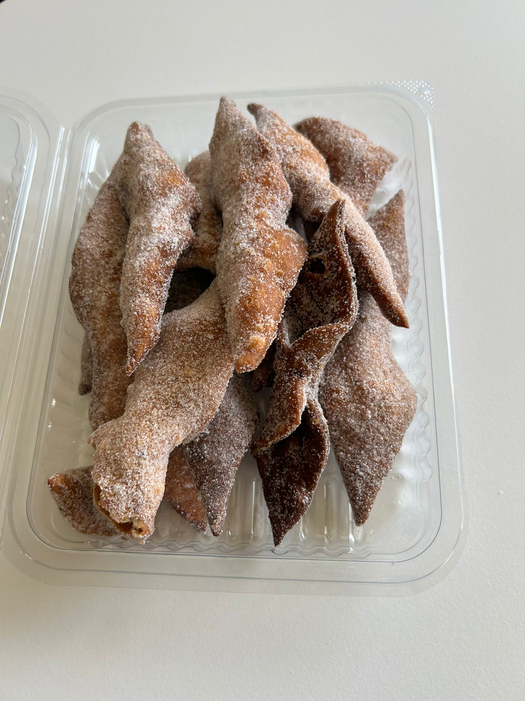
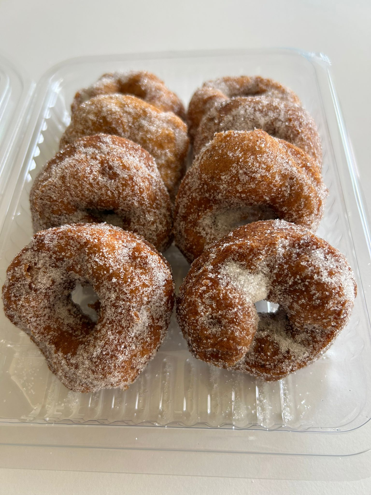
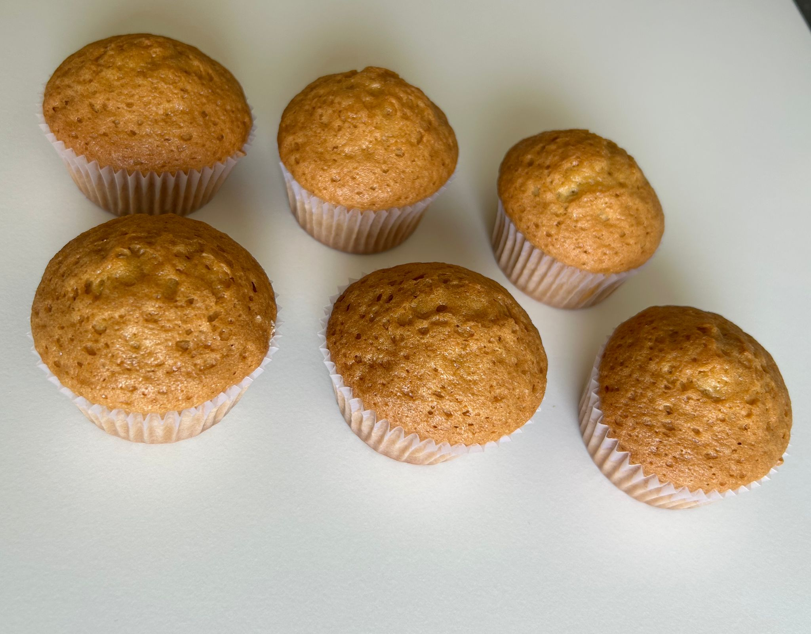
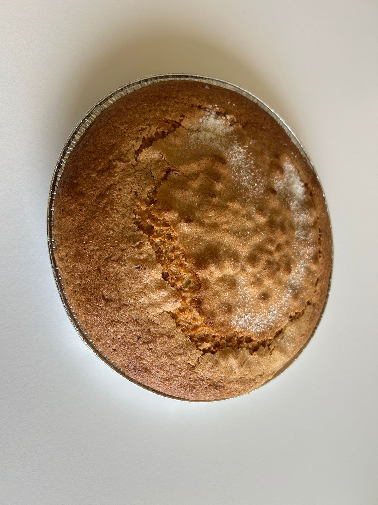
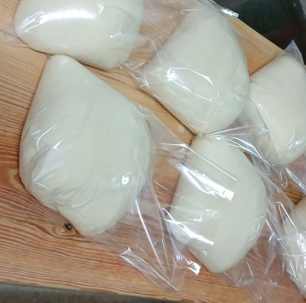
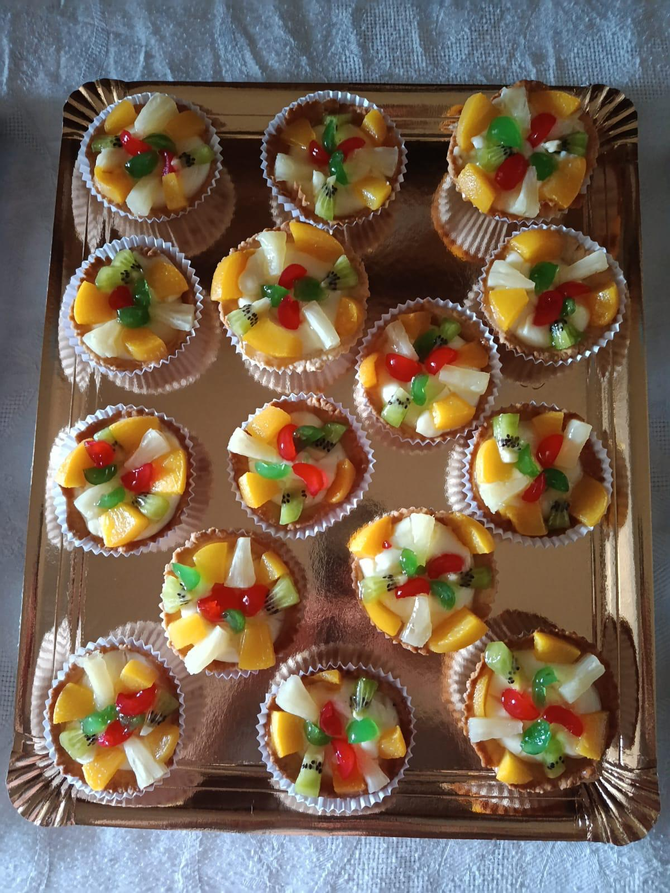
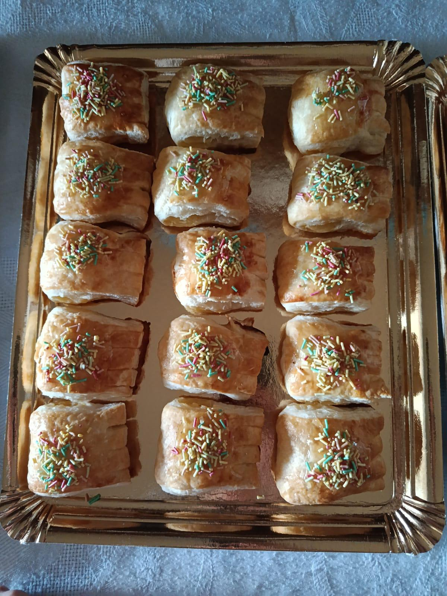
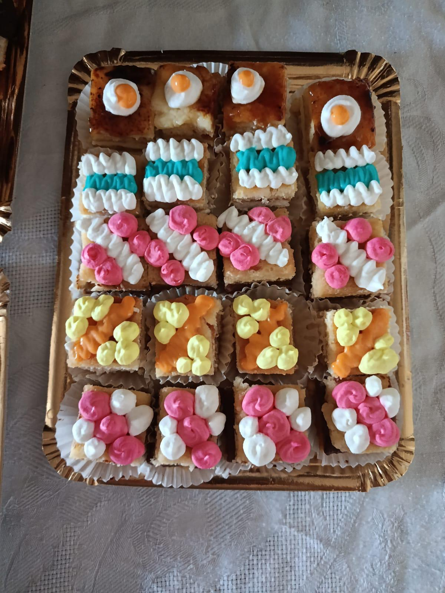

Dulces artesanales elaborados con recetas tradicionales y los mejores ingredientes.
En nuestra panadería elaboramos dulces caseros siguiendo recetas tradicionales que han pasado de generación en generación.

Crujientes por fuera y tiernos por dentro, bañados en miel o azúcar, con delicado aroma a anís y sésamo.

Esponjosos y ligeramente dulces, recuerdan la repostería casera, perfectos para desayunos o meriendas.

Suaves y aromáticas, elaboradas con ingredientes naturales, ideales para acompañar café o té.

Ligera y delicada, con sabor suave y textura que se deshace en la boca, perfecta para desayunos o meriendas.

Suave y lista para usar, garantiza tortitas esponjosas y deliciosas en minutos.
Húmedas y tiernas, con sabor delicado y aromático, ideales para acompañar café o chocolate.

Tartaletas individuales con fruta, ideales para celebraciones, reuniones y mesas dulces.

Bollería en formato pequeño, perfecta para compartir en desayunos y meriendas.

Pastelitos variados preparados para celebraciones y ocasiones especiales.